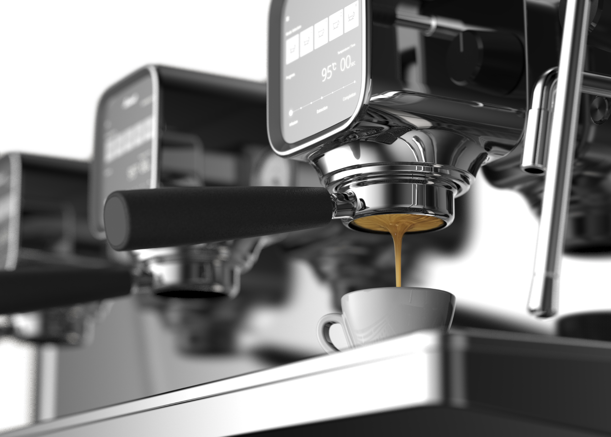
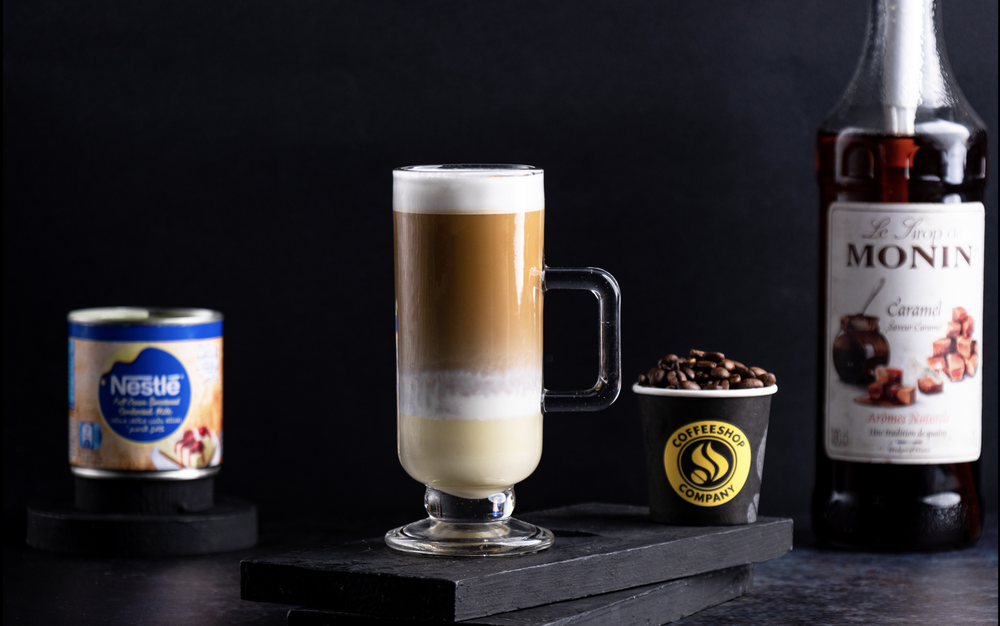

N2S FoodTech, where culinary innovation meets expertise, is the beacon guiding the gastronomic journey of connoisseurs worldwide.
With an unwavering commitment to excellence, N2S FoodTech redefines the art of food consulting, transcending geographical boundaries and tantalizing taste buds with a symphony of flavors.
Specializing in the rich tapestry of North Indian, the vibrant palette of South Indian, and the global allure of Continental cuisine, N2S FoodTech's culinary artisans weave magic on every plate.
While these genres serve as their foundation, they are boundlessly creative, embracing the limitless possibilities of culinary fusion. N2S FoodTech doesn't just consult; it curates experiences, transforms meals into memories, and elevates dining into an art form.
Savor the future of food with N2S FoodTech, where culinary dreams become delicious realities.. Contact Us
- 
- 

Coffee Consulting
Embark on a sensory voyage with N2S Coffee and Beverage Consulting, where every sip becomes a story, and every drink a masterpiece. Our consultancy is an ode to the world of beverages, an art form that transcends cultures and ignites passions. From the warm embrace of freshly brewed coffee to the refreshing coolness of artisanal beverages, N2S is the compass guiding the beverage industry's evolution.
While our expertise encompasses the classics and the avant-garde, we are driven by the quest for innovation. Whether it's crafting the perfect espresso blend, creating signature cocktails, or developing unique, health-conscious concoctions, we are the architects of beverage experiences that leave an indelible mark. N2S Coffee and Beverage Consulting: where tradition meets innovation, and each sip tells a tale of excellence.
Contact Us

Recruitment Agency & Talent Management
N2S Talent Management, the epicenter of culinary and beverage excellence, is in the throes of a dynamic expansion, actively seeking brilliant minds and passionate souls to join our family. Our mission is to nurture the industry's finest talents and pair them with the most discerning food and beverage establishments worldwide. As we venture into the realm of comprehensive talent management, we're not merely hiring staff; we're sculpting careers and fostering dreams.
Our commitment to the artistry of gastronomy and mixology runs deep, and we are in pursuit of individuals who share our dedication. Whether you're a master chef, a sommelier extraordinaire, a creative mixologist, or possess any culinary or beverage talent, N2S Talent Management is the platform to amplify your potential and propel your journey to stardom. Join us, as we rewrite the narrative of food and beverage, one talent at a time, and be a part of our remarkable voyage. Your future awaits with N2S Talent Management - where passion meets opportunity, and culinary dreams take flight. Join Us